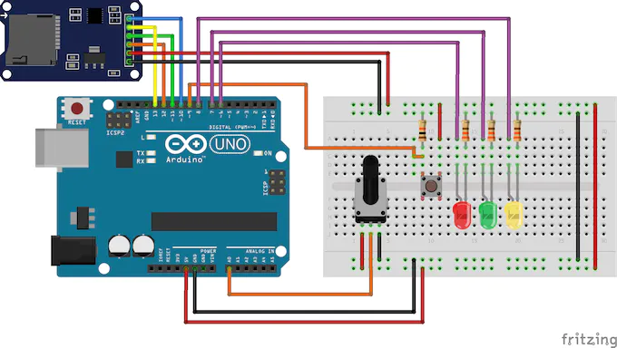

AI IN NEURAL NETWORK MANAGEMENT SYSTEM
--------------------------------
How AI can help in NETWORK MANAGEMENT?
AI can be used a service based manager which helps to understand each users ability to generate waste and helps in generaeing manageble waste generation moduels
AI can also store your day to day wasteage of waterr,electricity,and waste hence make it sustainable and hece helping in reduceing waste
As AI is collecting and building ore data base there is a lot of data in collection that can help th ewaste collection teams to be more efficient
